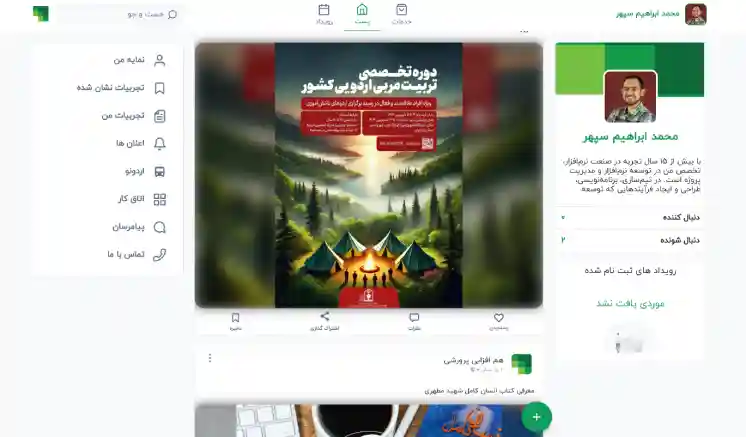
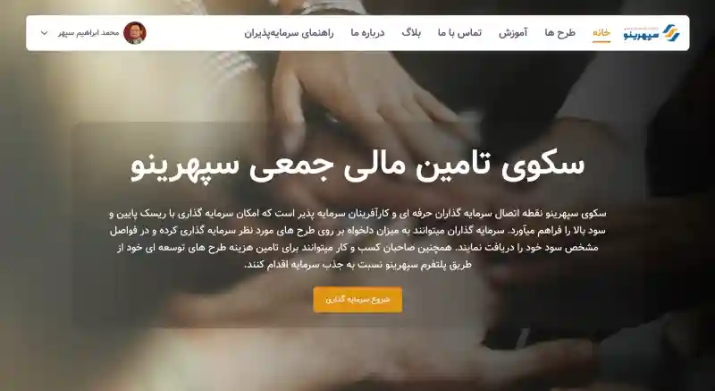
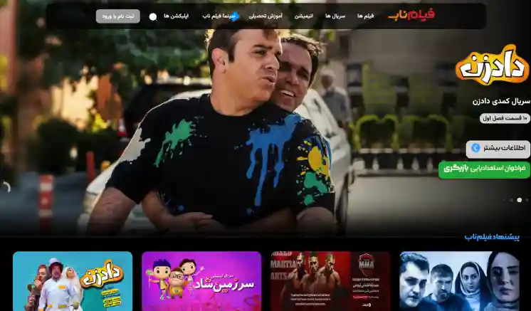
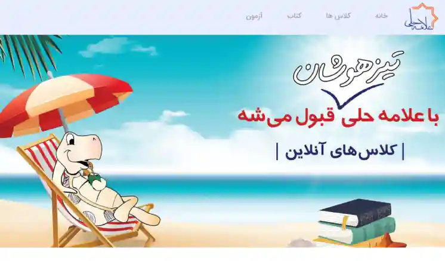
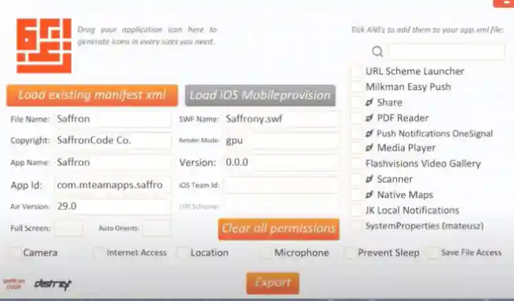

Technical Leadership
مدیریت فنی
CTO - FN Logistic & Dienstleistung GmbH (2025/now)
مدیر فنی - FN Logistic & Dienstleistung GmbH - ۱۴۰۳
(آقای نداف)
در پروژه شرکت FN Logistic، مسئولیت تحلیل فنی، برنامهریزی اجرایی، تعیین مسیر توسعه و مدیریت جامع تیم فنی، بههمراه تعامل مستقیم با کارفرما، بر عهده اینجانب بوده است. وظایف محوله شامل تحلیل رفتار کاربران، انجام فعالیتهای تحقیق و توسعه در خصوص فناوریها و نیازمندیها، و طراحی راهکارهای فنی متناسب با اهداف پروژه میگردید. همچنین بررسی، تحلیل و پیادهسازی ارتباط با سامانههای Kasa، فاکتور و سایر سرویسها و زیرساختهای مستقر در اتریش، بههمراه تحلیل و مدیریت ارتباطات مبتنی بر Socket، از جمله مسئولیتهای اینجانب بوده است.
مدیریت و نظارت بر اجرای پروژههای موبایل در پلتفرمهای Android و iOS، برنامهریزی فرآیند انتشار در فروشگاههای بینالمللی و تضمین کیفیت فنی خروجیها، از دیگر مسئولیتهای اینجانب محسوب میشد. در طول اجرای پروژه، کلیه نیازمندیهای جدید کارفرما—از طراحیهای گرافیکی تا اتصال به زیرساختهای دولتی و سرویسهای جانبی—توسط اینجانب بررسی و تحلیل شده و به وظایف اجرایی قابل انجام برای تیم فنی تبدیل میگردید. همچنین متناسب با نیاز هر فاز از پروژه، مدیریت افزایش یا کاهش تعداد اعضای تیم فنی انجام میپذیرفت.
In the FN Logistic project, I was responsible for technical analysis, execution planning, defining the development roadmap, and managing the entire technical team while maintaining direct communication with the client. My responsibilities included user behavior analysis, research and development on technologies and requirements, and designing technical solutions aligned with the project’s business goals. I also handled the analysis, integration, and implementation of connections with Kasa, invoicing systems, and other Austrian services and infrastructures, along with managing and optimizing socket-based communications.
Additionally, I supervised and managed the execution of mobile applications on Android and iOS platforms, planned releases for international app stores, and ensured overall technical quality. Throughout the project lifecycle, all new client requirements—from graphical design changes to integrations with governmental infrastructures and third-party Austrian services—were analyzed, structured, and translated into actionable tasks for the execution team. Depending on each project phase, I was also responsible for scaling the technical team up or down as needed. My role in this project was Technical Manager.
- Snap-food.at
Software Consultant - IRIB Reasearch (2023/2024)
مشاور و مربی نرم افزاری - مرکز تحقیقات صدا سیما -۱۴۰۳/۱۴۰۴
(آقای نعمتی)
I worked for one year at the IRIB Research Center as a Full-Stack Developer and Technical Mentor. My responsibilities included supporting and developing their survey system, mentoring the in-house technical team to enable them to independently maintain and develop the project, and designing and implementing development solutions based on hardware and software constraints.
اینجانب به مدت یک سال در مرکز تحقیقات صدا و سیما، به عنوان برنامهنویس فولاستک و مربی تیم فنی سازمان، فعالیت داشتهام. وظایف محوله شامل پشتیبانی و توسعه سامانه نظرسنجی، آموزش تیم فنی مستقر در سازمان به منظور توانمندسازی ایشان برای پشتیبانی و توسعه مستقل پروژه، و طراحی و پیادهسازی راهکارهای توسعهای متناسب با محدودیتهای سختافزاری و نرمافزاری بوده است.
- توصیه نامه
- Recommendation letter
- iribresearch.ir
Techlead - Hamup Co. (2024/2026)

اینجانب جهت همکاری با استارتآپ "هم آپ" بهمنظور تحویل پروژهای که پیشتر تولید شده بود، دعوت گردیدم. وظایف محوله شامل انتقال پروژه از تیم قبلی، ادامه توسعه پروژه، تجهیز شرکت به تیم داخلی و ایجاد زیرساختهای نرمافزاری و سختافزاری بوده است. در ابتدای همکاری، بخشهایی از کدنویسی و تحلیل پروژه بر عهده اینجانب قرار گرفت و پایپلاینهایی در گیتهاب به منظور خودکارسازی فرآیند بیلد APK و مدیریت سرورها پیادهسازی شد. این اقدامات جهت اطمینان از پایداری پروژه و پیشگیری از بروز مشکلات ناشی از خطای نیروی انسانی جدید انجام گردید. همچنین با توجه به شرایط شرکت، افراد منتخب برای تیم داخلی بر اساس بیشترین هماهنگی و توانمندی جهت انجام وظایف شرکت با حداقل هزینه تعیین شدند. در حال حاضر، دو نفر برنامهنویس فولتایم پروژه را در استکهای React، Laravel، Node.js و Flutter برای توسعه موبایل و وب پیش میبرند. این تیم که در شرایط عادی نیازمند چهار نفر بود، با همین تعداد بهصورت کارآمد فعالیت مینماید. نقش اینجانب شامل راهبری فنی و ارائه راهکارهای نرمافزاری به منظور تحقق اهداف شرکت میباشد.
I was invited to collaborate with the startup "Ham App" to deliver a project that had already been developed. My responsibilities included taking over the project from the previous team, continuing its development, and equipping the company with an in-house team along with software and hardware infrastructure. Initially, I handled parts of the coding and project analysis, and implemented pipelines on GitHub for automating APK builds and server management. These measures ensured project stability and minimized issues caused by new team members joining the project. Additionally, I carefully selected team members who aligned best with the company’s requirements while maintaining cost efficiency. Currently, 2 full-time developers manage the project across React, Laravel, Node.js, and Flutter stacks for mobile and web development. This team, which would typically require 4 members, operates effectively with the streamlined setup. My role involves technical leadership and providing software solutions to drive the company's objectives forward.
- hamup.ir
CTO - Sepehrino Co. (2024/now)

اینجانب مسئول ادامه توسعه نرمافزارهای سازمان و همچنین گزینش و جذب تیم فنی در حوزههای Laravel و Next.js بودهام. علاوه بر این، وظایف من شامل تحلیل و اولویتبندی وظایف، برنامهریزی زمانبندی پروژه، نظارت بر فعالیتهای DevOps و اقدامات امنیتی در سرورهای شرکت و آموزش اعضای تیم (Onboarding) بوده است. تمامی فعالیتها با هدف تضمین اجرای بهینه پروژه و حفظ بالاترین استانداردهای امنیت و کیفیت انجام شد.
I am responsible for delivering software projects and setting up a local development team specializing in Laravel and Next.js positions. My role includes analyzing tasks, scheduling, and overseeing DevOps activities such as pipeline processes and security measures on our company servers. I work to ensure efficient project execution and maintain high standards of security and performance.
- sepehrino.com
CTO - Setareh Honar Institute. (2023/2024)
مدیر فنی - موسسه تصویری ستاره هنر - ۱۴۰۱/۱۴۰۲ (آقای شهبازی)

I was invited to create an internal programming team for the "Setareh-Honar" Institute to facilitate the growth and development of their VOD systems. After assessing the current state and future requirements, I chose C# for server-side programming and Flutter for mobile development, and proceeded to recruit software developers.
During this process, software development was carried out in an agile manner, with short iterations spanning a few weeks. Within less than 4 months, all versions including web, mobile, and iOS were ready for deployment. Ultimately, the institute will have the capability to continue developing and supporting their software with the carefully assembled team.
One professional C# programmer, one experienced backend and Linux developer, two Flutter programmers, one graphic designer, one hourly C# developer, one FrontEnd Developer, and one UX designer were recruited for the team.
برای رشد و توسعه سامانه پخش فیلم موسسه ستاره هنر، اینجانب دعوت شدم تا تیم برنامهنویس داخلی موسسه را ایجاد کنم. پس از بررسی وضعیت موجود و نیازمندیهای آتی، زبان برنامهنویسی C# برای سمت سرور و Flutter برای توسعه سمت موبایل انتخاب شد و فرآیند گزینش نیروهای برنامهنویس آغاز گردید.
در این فرآیند، توسعه نرمافزارها به صورت چابک و در فازهای کوتاه چند هفتهای انجام شد و در کمتر از چهار ماه، کلیه نسخههای وب، موبایل و iOS آماده بهرهبرداری گردیدند. در نهایت، موسسه قادر شد با تیم چیده شده، نرمافزارهای خود را توسعه داده و پشتیبانی نماید. در این راستا، یک برنامهنویس C# حرفهای، یک کارشناس DevOps و لینوکس، دو برنامهنویس Flutter و یک گرافیست به تیم افزوده شدند و همچنین همکاری نفرات ساعتی در حوزههای C#، Front-End و UX Design انجام شد.
- filmnab.com
CTO - Bina Institute. (2022/2023)
موسسه فرهنگی بینا، به منظور توسعه زیرساختهای نرمافزاری مورد نیاز پروژههای خود، با اینجانب همکاری را آغاز کرد تا تیم برنامهنویس داخلی برای موسسه تشکیل شود و زیرساختهایی شامل فرمهای نظرسنجی، پنلهای گزارشدهی، پنلهای جئومتریک و سامانه SSO تحت وب راهاندازی گردد.
برای این مجموعه، دو برنامهنویس ReactJS و یک برنامهنویس Golang گزینش شدند و یک نفر QC نیز انتخاب شد و پس از آموزشهای لازم، تحویل مالک محصول موسسه گردید. تمامی کدها و سرورها به سرویسهای CI/CD متصل شده و فرآیندهای انتشار نسخه و پشتیبانگیری به صورت خودکار انجام شد.
The Bina Institute, in order to enable the development of the necessary software infrastructure for its projects, initiated collaboration with me to establish an in-house programming team. My role was to set up web-based infrastructures such as survey forms, reporting panels, geospatial panels, and SSO systems.
For this organization, I recruited two ReactJS developers and one Golang developer and one QC specialist. After receiving the necessary training, they were handed over to the product owner of the institute. All codes and servers were connected to CI/CD services, and the version release and backup processes were automated.
- توصیه نامه
- Recommendation letter
Technical Manager - Dayan Startup Studio (2023)
استارت آپ استودیو دایان - ۱۴۰۱
I was invited to contribute to the development of the programming team at "Dyan Startup Studio", a startup studio focused on attracting investors and aiding the growth of startups in various fields. The purpose of my invitation was to enable the studio to provide assistance to startups in their software development endeavors. Two PHP programmers were selected for this company and were onboarded, providing them with the necessary training.
Also, I sat up CI/CD to automate processes and also installed Jira for project management purposes.
اینجانب جهت توسعه تیم برنامهنویسی در استودیو دایان، یک استارتآپ استودیو که به جذب سرمایهگذاران و حمایت از رشد استارتآپها در حوزههای مختلف میپردازد، دعوت شدم. هدف از این همکاری، ارائه کمک به استارتآپها در زمینه توسعه نرمافزارهای خود بود. دو برنامهنویس PHP برای این شرکت گزینش و به استودیو پیوستند و آموزشهای لازم به آنان ارائه شد.
همچنین، فرآیندهای CI/CD به منظور خودکارسازی عملیات طراحی و پیادهسازی شد و سامانه Jira برای مدیریت وظایف و پیگیری تسکها در شرکت راهاندازی گردید.
- Linkedin
CTO - Helli Institute (2021/now)
مدیر فنی - موسسه آموزشی علامه حلی - ۱۳۹۸/تاکنون (آقای انصاری)

Alameh Helli Educational Institute, recognizing the need to improve and enhance its online examination system and the lack of a developer, approached me to take charge of the development and support of this system by forming a new team. Given the outdated source code, this task posed a challenge. However, after several months of studying the source code and familiarizing myself with various tools and languages such as Python, Linux, React, and C++, I was able to acquire the necessary skills for the development and support of these projects. In addition to the main project, significant projects such as a mobile version of the e-book reader, management panels for student class registration, and a customized VoIP system were developed for the institute's use. Furthermore, I assembled a complete team to support and develop each of these projects within the institute.
موسسه آموزشی علامه حلی، با درک نیاز به بهبود و ارتقای سامانه آزمون آنلاین خود و فقدان توسعهدهنده، از اینجانب درخواست کرد تا با تشکیل یک تیم جدید، توسعه و پشتیبانی این سامانه را بر عهده بگیرم. با توجه به قدیمی بودن سورس کد، این وظیفه چالشبرانگیز بود، اما پس از چند ماه مطالعه سورس کد و آشنایی با ابزارها و زبانهای مختلف مانند پایتون، لینوکس، React و C++، توانستم مهارتهای لازم برای توسعه و پشتیبانی این پروژهها را کسب نمایم. علاوه بر پروژه اصلی، پروژههای مهمی از جمله نسخه موبایل کتابخوان، پنلهای مدیریت برای ثبتنام کلاسهای دانشآموزان و سامانه ویپ سفارشیسازی شده نیز برای استفاده در موسسه توسعه و طراحی شدند. همچنین، تیم کاملی برای پشتیبانی و توسعه هر یک از این پروژهها در موسسه تشکیل شد.
- توصیه نامه
- Recommendation letter
- mhelli.com
Technical Team Coach - Paliz Co (2021/2022)
As a programmer and consultant with experience in managing technical teams and developing custom software, I joined Paliz Company. In this software organization, my primary role involved studying project management methodologies, providing training, and implementing project management tools in an Agile (Scrum) format. Considering the company's .NET infrastructure, I conducted training and set up Azure DevOps services for the company. Additionally, I was responsible for assessing the status of each of the five programmers, identifying their strengths and weaknesses, and communicating them to the company for training or determining more suitable positions.
اینجانب به عنوان برنامهنویس و مشاور با تجربه در حوزه مدیریت تیمهای فنی و توسعه نرمافزارهای سفارشی، به شرکت فنآوران ارتباطات پالیز پیوستم. در این مجموعه، نقش اصلی اینجانب شامل بررسی روشهای پیشبرد پروژهها توسط تیم، ارائه آموزشها و راهاندازی ابزارهای مدیریت پروژه به صورت اسکرام بود. با توجه به زیرساختهای .NET شرکت، آموزش و راهاندازی سرویس Azure DevOps نیز توسط اینجانب انجام شد. همچنین، وظیفه بررسی عملکرد هر یک از پنج برنامهنویس تیم به عهده اینجانب بود تا نقاط ضعف و قوت هر یک شناسایی شده و برای آموزش یا تعیین موقعیت مناسبتر به شرکت گزارش گردد.
- توصیه نامه
- Recommendation letter
Co-founder
موسس - مدیر فن آوری اطلاعات
Co-founder - Tartanak Co. (2025/Today)
بنیان گذار/مدیرفنی - شرکت نرم افزار گستران تارتنک - ۱۴۰۳/تاکنون
I co-founded Tartanak Software Company to formalize my software consulting and development business and enable the delivery of enterprise and custom software projects for multiple clients. Through this company, I structured development processes, built software solutions, and transferred the developed technologies and teams to client companies, facilitating smooth project initiation while ensuring high-quality outcomes.
اینجانب شرکت نرمافزار گستران تارتنک را تأسیس نمودم تا کسبوکار مشاوره و توسعه نرمافزاری خود را به صورت رسمی سازماندهی کرده و امکان ارائه پروژههای نرمافزار سازمانی و سفارشی به مشتریان متعدد پیش از تأسیس شرکتهای خودشان فراهم گردد. از طریق این شرکت، فرآیندهای توسعه نرمافزارهای سفارشی ساختاربندی شده، راهکارهای نرمافزاری ایجاد و تیمهای توسعه تشکیل شدند و پس از آمادگی مشتری، به شرکتهای مشتریان منتقل گردید تا آغاز پروژهها به صورت روان انجام شود و کیفیت بالای نرمافزار تضمین گردد.
- codekit.agency
CTO - HSH Co. (2021/Today)
مدیر جذب تیم فنی - شرکت هوشمند سازان هستی - ۱۴۰۰/تاکنون
At HSH Company as a CTO, consistently engaged in the selection and identification of young talents in the field of programming. Subsequently, I guide them towards training courses and, if possible, facilitate their employment in software companies. We are always on the lookout for skilled and ready-to-work programmers to attract and place them in various companies.
اینجانب به عنوان مدیر فناوری اطلاعات در شرکت هوشمند سازان هستی، مسئول گزینش و شناسایی استعدادهای جوان در زمینه برنامهنویسی بوده و هدایت آنان به دورههای آموزشی و در صورت امکان، استخدام در شرکتهای نرمافزاری را بر عهده داشتم. این مجموعه همواره به دنبال جذب نیروهای برنامهنویس آماده به کار و انتقال آنان به شرکتهای مختلف بوده است.
- hsh-co/jobs
- hsh-co.ir
CEO - Saffron Co. (2019/2021)
مدیر عامل - شرکت نرم افزار گستر زعفران - ۱۳۹۸/۱۴۰۰
As the inventor of the 'Saffron Code' SDK and holding the position of CEO, I had the responsibility to offer software infrastructure services to software companies that had utilized this framework to develop their mobile applications. 'Saffron Code' was developed for Android and iOS mobile app development using the ActionScript3 and AdobeAir programming languages. Hundreds of mobile applications were produced for startups using this framework between the years 2014 to 2023 and were published on software marketplaces.
اینجانب به عنوان کدنویس فریمورک "زعفران کد" و با سمت مدیرعامل، خدمات زیرساخت نرمافزاری این فریمورک را به شرکتهای نرمافزاری که با استفاده از آن نرمافزارهای موبایل خود را تولید میکردند، ارائه میدادم. فریمورک "زعفران کد" به منظور توسعه برنامههای موبایل در پلتفرمهای اندروید و iOS با بهرهگیری از زبان برنامهنویسی ActionScript3 و Adobe Air طراحی و پیادهسازی شده بود. صدها نرمافزار موبایل برای استارتآپها در بازه زمانی ۱۳۹۳ تا ۱۴۰۰ با استفاده از این فریمورک تولید و در فروشگاههای نرمافزاری منتشر گردیدند.
- GitHub.com
Techmical Manager - Holderwin (2022/Today)
As a Co-Founder and CTO, I'm gathering technical solutions and the best architect to run this project perfectly.
Holder win is a market-making platform & IPG for digital assets.
founded in 2022
اینجانب به عنوان یکی از بنیانگذاران و مدیران فنی، مسئول جمعآوری راهحلهای فنی و طراحی بهترین ساختار برای اجرای کامل این پروژه بودم. Holder Win یک پلتفرم سازنده بازار و IPG برای داراییهای دیجیتال است که در سال ۲۰۲۲ تأسیس شده است.
- Holderwin.com
Technical Advisor for Startups
مشاور فنی استارت آپ
As an experienced technical person, who had hand over both programing and mentoring for software systems, I was involved in many startups as a Technical Advisor, Agile project manager and so on. some of them are mentioned here.
به عنوان یک فرد فنی با تجربه که در زمینه برنامهنویسی و راهنمایی سیستمهای نرمافزاری فعالیت داشتم، در نقش مشاور فنی، مدیر پروژه Agile و سایر نقشها در تعدادی استارتاپ حضور داشتم. برخی از آنها در ادامه ذکر شدهاند.
Technical Consultant - The Artical (2023)
آرتیکال - ۱۴۰۱ (خانم محمدزاده)
The Artical is a startup that assists artists in selling their artistic products. I directed the team towards cost-effective and high-speed development, guiding them in achieving their goals using ready-made WordPress systems. Additionally, I connected them with a suitable individual for WordPress development. In many cases, project development without unnecessary and costly coding from scratch will be more efficient.
تیم آرتیکال یک استارتآپ است که به هنرمندان در فروش محصولات هنری خود کمک میکند. اینجانب تیم را در جهت توسعه با حداقل هزینه و بیشترین سرعت هدایت نمودم و آنها را در پیشبرد اهدافشان با استفاده از سامانههای آماده وردپرس راهنمایی کردم. همچنین، یک نفر مناسب برای توسعه وردپرس به تیم آنان معرفی شد. در بسیاری از موارد، توسعه پروژهها از طریق کدنویسی از صفر، بیمورد و پرهزینه خواهد بود.
- theartical.com
Technical Manager - Sarrafi Digital (2021)
مدیر فنی - صرافی دیجیتال - ۱۳۹۹ (آقایان مزروعی و مجتباعی)
SarafiDigital was an Iranian online exchange startup. I had many researches about blockchain and cryptocurrencies and I selected a great team of programmers and graphic designers to complete the first phase of this project.
SarafiDigital یک استارتآپ ایرانی در حوزه تبادل آنلاین ارز دیجیتال بود. در این پروژه، اینجانب تحقیقات جامعی در زمینه بلاکچین و ارزهای دیجیتال انجام دادم و تیمی متشکل از برنامهنویسان و طراحان گرافیک را برای تکمیل فاز اول پروژه تشکیل دادم.
Programmer
برنامه نویسی
As an experienced technical person, who had hand over both programing and mentoring for software systems, I was involved in many startups as a Technical Advisor, Agile project manager and so on. some of them are mentioned here.
در دورههای قبلی و گاهی در پروژههای خاص، اینجانب نقش کدنویسی را بر عهده داشتهام. در ادامه، چند نمونه از این پروژهها ارائه شده است.
Adobe Air Assistant Software - Distriqt Pty Ltd (2020)
Adobe Air Assistant Software - Distriqt Pty Ltd (1399)

District, a leading company in developing software libraries for ActionScript, inspired the creation of the Adobe Air Assistant software. To enhance and streamline the process of integrating these libraries, I developed this tool, enabling users to add software libraries to their Adobe Air projects with just a few clicks.
This open-source software, available on GitHub, has received positive feedback from developers and is widely utilized by professionals in the ActionScript community.
شرکت دیستریکت (District) یکی از پیشگامان در توسعه کتابخانههای نرمافزاری برای زبان ActionScript بود. به منظور بهبود و تسریع فرآیند استفاده از این کتابخانهها، اینجانب نرمافزاری با عنوان Adobe Air Assistant توسعه دادم. این ابزار به کاربران امکان میداد با چند کلیک ساده، کتابخانههای نرمافزاری موردنیاز خود را به پروژههای Adobe Air اضافه نمایند.
این نرمافزار که به صورت متنباز (Open Source) در GitHub منتشر شد، بازخوردهای مثبتی از توسعهدهندگان دریافت کرد و توسط بسیاری از متخصصان حوزه ActionScript مورد استفاده قرار گرفت.
- توصیه نامه
- Recommendation letter
- Distriqt Pty Ltd
- Adobe-Air-Assistant
- Tutorial
Android and iOS Programmer - MTeam Co. (2012 - 2019)
برنامه نویس اندروید و iOS - مطهرنت پارس (۱۳۹۱ - ۱۳۹۸)
From 2012 to 2019, I worked as a software developer for iOS and Android applications at MTeam (Mataher Net Pars). My primary expertise was in ActionScript 3 programming and Adobe AIR.
از سال ۱۳۹۱ تا ۱۳۹۸، اینجانب به عنوان توسعهدهنده نرمافزارهای iOS و Android در شرکت نرمافزاری مطهر نت پارس (MTeam) فعالیت داشتم. تخصص اصلی اینجانب در برنامهنویسی با زبان ActionScript 3 و استفاده از ابزار Adobe AIR بود.
Web Programmer - Hoogaman Co. (2010 - 2012)
برنامه نویس وب - هوگامان رسانه (۱۳۸۹ - ۱۳۹۱)
At Hogaman, I worked as a web developer, responsible for creating interactive and visually appealing full-flash websites.
در شرکت هوگامان، اینجانب به عنوان برنامهنویس مسئول توسعه وبسایتهای کامل فلش، جذاب و تعاملی بودم.
Game Programmer - Ganjine Yaad Co. (2008 - 2010)
برنامه نویس بازی - گنجینه یاد (۱۳۸۷ - ۱۳۸۸)
At Ganjineh Yad, I worked as a developer, responsible for creating interactive educational games.
در گنجینه یاد، اینجانب به عنوان برنامهنویس مسئول توسعه بازیهای آموزشی تعاملی بودم.


 مرکز تحقیقات صدا و سیما
مرکز تحقیقات صدا و سیما Distriqt Pty Ltd
Distriqt Pty Ltd